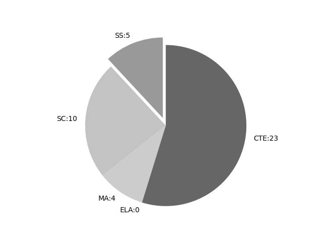

Texas
Report date: 2021-07-08
The frequency of all keywords found in this state's standards: 42
Comparable state score: 0.35 (median: .303, SD: .324)
The frequency above is the sum of all keywords found in all of this state's four core academic standards and the state's CTE/career standards. This total count is broken down by keyword and discipline area below.
On this site, 'comparable scores' are calculated as: keywords found divided by total words in the standards document(s) - multiplied by 100,000. The comparable scores attempt to normalize data, accounting for very different sizes of curriculum guidance documentation.
Frequencies by keyword or phrase:- spatial: 12
- Geographic Information System: 11
- geospatial: 2
- Global Positioning System: 11
- GIS: 6

Frequencies by discipline area: - SS: 5
(Comp: 0.558) - SC: 10
(Comp: 1.218) - MA: 4
(Comp: 0.526) - ELA: 0
(Comp: 0.0) - CTE: 23
(Comp: 0.268)
Review the standards document(s) used in this machine search: external link
Examples of keyword use by discipline area (and document): - CTE
- TEKS_CTE.pdf, page:116, position:1371
to actual distance; (D) evaluate elevation and terrain features from topographic maps; (E) use land survey and coordinate systems; and (F) locate position and interpret images using a geospatial interface. (8) The student evaluates planning da - TEKS_CTE.pdf, page:120, position:1059
to actual distance; (D) evaluate elevation and terrain features from topographic maps; (E) use land survey and coordinate systems; and (F) locate position and interpret images using a geospatial interface.Source Note: The provisions of this §13 - TEKS_CTE.pdf, page:149, position:2078
(5) The student constructs agricultural structures using appropriate technology. The student is expected to: (A) demonstrate appropriate use of surveying equipment; (B) demonstrate and apply Geographic Information System (GIS) and Global Positioning System (GPS) princip - TEKS_CTE.pdf, page:149, position:2118
structures using appropriate technology. The student is expected to: (A) demonstrate appropriate use of surveying equipment; (B) demonstrate and apply Geographic Information System (GIS) and Global Positioning System (GPS) principles; (C) reinforce, place, finish - TEKS_CTE.pdf, page:149, position:2108
structures using appropriate technology. The student is expected to: (A) demonstrate appropriate use of surveying equipment; (B) demonstrate and apply Geographic Information System (GIS) and Global Positioning System (GPS) principles; - TEKS_CTE.pdf, page:610, position:3047
(C) predict how geographical considerations impact regional change over time; (D) interpret the importance of cultural symbols in the planning of government activities; (E) explore how geographic information systems assist in gathering information; and - TEKS_CTE.pdf, page:610, position:2694
and geographiccharacteristics of critical regions compared to the economic significance of the geographic characteristics of selectedplaces such as oil fields in the Middle East using maps and Global Positioning System (GPS) locations; (B) interpret geographical in - TEKS_CTE.pdf, page:1049, position:1537
Students will use a varietyof mathematical methods and models to represent and analyze problems that represent a range of real-worldengineering applications such as robotics, data acquisition, spatial applications, electrical measurement, manufacturi - TEKS_CTE.pdf, page:1051, position:1026
and depict the critical load for buckling using Eulers formula; and (M) design and apply factors of safety to column and beam design. (5) The student understands the role of trigonometry in spatial applications. The student is expected to: (A) - TEKS_CTE.pdf, page:1131, position:419
and Internet applications; (B) use word-processing, database, spreadsheet, and presentation software; (C) examine collaborative, groupware, and virtual meeting software; and (D) discuss Geographic Information Systems, Global Positioning Systems, and other computer- - TEKS_CTE.pdf, page:1131, position:451
(B) use word-processing, database, spreadsheet, and presentation software; (C) examine collaborative, groupware, and virtual meeting software; and (D) discuss Geographic Information Systems, Global Positioning Systems, and other computer-based equipment intransporta - TEKS_CTE.pdf, page:1135, position:415
and Internet applications; (B) use word-processing, database, spreadsheet, and presentation software; (C) examine collaborative, groupware, and virtual meeting software; (D) discuss Geographic Information Systems and Global Positioning Systems; and (E) discu - TEKS_CTE.pdf, page:1135, position:450
(B) use word-processing, database, spreadsheet, and presentation software; (C) examine collaborative, groupware, and virtual meeting software; (D) discuss Geographic Information Systems and Global Positioning Systems; and (E) discuss other computer-based equipme - TEKS_CTE.pdf, page:1140, position:1531
personal management software such as email and Internet applications and word-processing, database,spreadsheet, presentation, collaborative, groupware, and virtual meeting software; (B) discuss Geographic Information Systems and Global Positioning Systems applications; and - TEKS_CTE.pdf, page:1140, position:1566
as email and Internet applications and word-processing, database,spreadsheet, presentation, collaborative, groupware, and virtual meeting software; (B) discuss Geographic Information Systems and Global Positioning Systems applications; and (C) use computer-based equi - TEKS_CTE.pdf, page:1144, position:2697
personal management software such as email and Internet applications and word-processing, database,spreadsheet, presentation, collaborative, groupware, and virtual meeting software; (B) discuss Geographic Information Systems and Global Positioning Systems applications; and - TEKS_CTE.pdf, page:1144, position:2732
as email and Internet applications and word-processing, database,spreadsheet, presentation, collaborative, groupware, and virtual meeting software; (B) discuss Geographic Information Systems and Global Positioning Systems applications; and (C) use other computer-base - TEKS_CTE.pdf, page:1202, position:1762
and Internet applications; (B) use word-processing, database, spreadsheet, and presentation software; (C) use collaborative or virtual meeting software; (D) use and explain the benefits of Geographic Information Systems (GIS) and Global Positioning Systems (GPS)hardwa - TEKS_CTE.pdf, page:1202, position:1803
database, spreadsheet, and presentation software; (C) use collaborative or virtual meeting software; (D) use and explain the benefits of Geographic Information Systems (GIS) and Global Positioning Systems (GPS)hardware and applications; (E) use comp - TEKS_CTE.pdf, page:1202, position:1793
use word-processing, database, spreadsheet, and presentation software; (C) use collaborative or virtual meeting software; (D) use and explain the benefits of Geographic Information Systems (GIS) and Global Positioning Systems (GPS)hardware and - TEKS_CTE.pdf, page:1235, position:1534
and field investigations; (B) use a wide variety of additional course apparatuses, equipment, techniques, and procedures as appropriate suchas satellite imagery and other remote sensing data, Geographic Information Systems (GIS), Global Positioning System(GPS), scientifi - TEKS_CTE.pdf, page:1235, position:1572
a wide variety of additional course apparatuses, equipment, techniques, and procedures as appropriate suchas satellite imagery and other remote sensing data, Geographic Information Systems (GIS), Global Positioning System(GPS), scientific probes, microscopes, telescopes, - TEKS_CTE.pdf, page:1235, position:1565
(B) use a wide variety of additional course apparatuses, equipment, techniques, and procedures as appropriate suchas satellite imagery and other remote sensing data, Geographic Information Systems (GIS), Global Positioning System(GPS), scientific prob
- MA
- TEKS_MA_6-8.pdf, page:2, position:3201
other. Students connect verbal,numeric, graphic, and symbolic representations of relationships, including equations and inequalities. Students usegeometric properties and relationships, as well as spatial reasoning, to model and analyze situations and so - TEKS_MA_6-8.pdf, page:7, position:3276
other. Students connect verbal, numeric, graphic, and symbolicrepresentations of relationships, including equations and inequalities. Students use geometric properties andrelationships, as well as spatial reasoning, to model and analyze situations and so - TEKS_MA_6-8.pdf, page:11, position:3272
of relationships, including equations and inequalities. Students begin to develop anunderstanding of functional relationships. Students use geometric properties and relationships, as well as spatialreasoning, to model and analyze situations and sol - TEKS_MA_K-5.pdf, page:6, position:3748
subtractionto solve problems. By comparing a variety of solution strategies, students use efficient, accurate, and generalizablemethods to perform operations. (C) Students use basic shapes and spatial reasoning to model objects in their environment a
- SC
- TEKS_Science_9-12.pdf, page:3, position:447
positive and negative feedbackcycles; and (C) collect and evaluate global environmental data using technology such as maps, visualizations, satellite data,Global Positioning System (GPS), Geographic Information System (GIS), weather balloons, buoys, etc. (5) Science - TEKS_Science_9-12.pdf, page:3, position:414
of aquatic environments, including positive and negative feedbackcycles; and (C) collect and evaluate global environmental data using technology such as maps, visualizations, satellite data,Global Positioning System (GPS), Geographic Information System (GIS), weath - TEKS_Science_9-12.pdf, page:3, position:477
feedbackcycles; and (C) collect and evaluate global environmental data using technology such as maps, visualizations, satellite data,Global Positioning System (GPS), Geographic Information System (GIS), weather balloons, buoys, etc. (5) Science conc - TEKS_Science_9-12.pdf, page:21, position:3719
applications; (F) use a wide variety of additional course apparatuses, equipment, techniques, and procedures as appropriate suchas satellite imagery and other remote sensing data, Geographic Information Systems (GIS), Global Positioning System - TEKS_Science_9-12.pdf, page:21, position:355
8:39:54 AM]and relevance. (A) Systems. A system is a collection of interacting physical, chemical, and biological processes that involves theflow of matter and energy on different temporal and spatial scales. Earths system is composed of interdepend - TEKS_Science_9-12.pdf, page:21, position:3757
a wide variety of additional course apparatuses, equipment, techniques, and procedures as appropriate suchas satellite imagery and other remote sensing data, Geographic Information Systems (GIS), Global Positioning System - TEKS_Science_9-12.pdf, page:21, position:3750
(F) use a wide variety of additional course apparatuses, equipment, techniques, and procedures as appropriate suchas satellite imagery and other remote sensing data, Geographic Information Systems (GIS), Global Positioning System - TEKS_Science_9-12.pdf, page:26, position:2325
of additional course apparatuses, equipment, techniques, materials, and procedures asappropriate such as air quality testing devices, cameras, flow meters, Global Positioning System (GPS) units,Geographic Information System (GIS) software, computer models, densiometers, cl - TEKS_Science_9-12.pdf, page:26, position:2286
mineral samples; (H) use a wide variety of additional course apparatuses, equipment, techniques, materials, and procedures asappropriate such as air quality testing devices, cameras, flow meters, Global Positioning System (GPS) units,Geographic Information System (GIS) - TEKS_Science_9-12.pdf, page:26, position:2355
equipment, techniques, materials, and procedures asappropriate such as air quality testing devices, cameras, flow meters, Global Positioning System (GPS) units,Geographic Information System (GIS) software, computer models, densiometers, clinome
- SS
- TEKS_SS_9-12.pdf, page:16, position:689
completion of this course.(b) Introduction. (1) In World Geography Studies, students examine people, places, and environments at local, regional, national, andinternational scales from the spatial and ecological perspectives of geography. Student - TEKS_SS_9-12.pdf, page:17, position:1868
the local, state, and federal governments haveachieved the ideals espoused in the founding documents.(c) Knowledge and skills. (1) History. The student understands how geography and processes of spatial exchange (diffusion) influenced eventsin the past - TEKS_SS_9-12.pdf, page:19, position:1922
evaluate the geographic and economic impact of policies related to the development, use, and scarcity of naturalresources such as regulations of water. (13) Government. The student understands the spatial characteristics of a variety of global political - TEKS_SS_K-5.pdf, page:2, position:968
Christopher Columbus,and José Antonio Navarro, who helped to shape the state and nation. (3) Geography. The student understands the concept of location. The student is expected to: (A) use spatial terms, including over, under, near, far, left, an - TEKS_SS_K-5.pdf, page:6, position:1152
The student understands the relative location of places. The student is expected to: (A) describe the location of self and objects relative to other locations in the classroom and school using spatialterms; and (B) locate places using the four car
{kind=link}